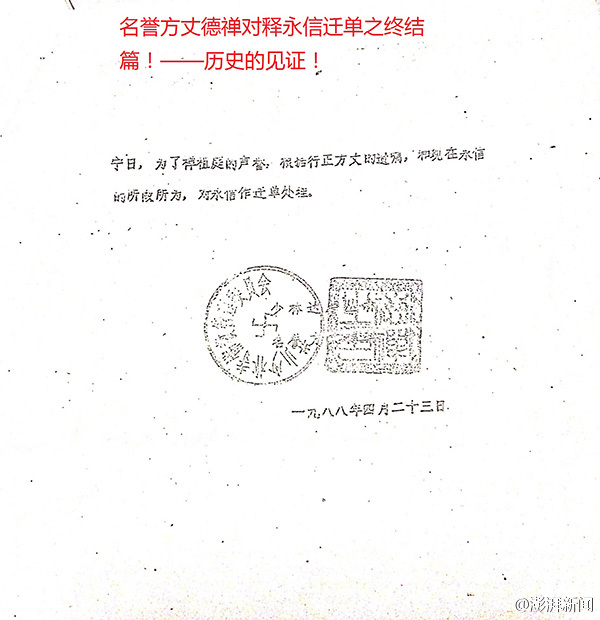

为什么股市大涨的时候，没有媒体说股市连续三天大涨全国股民人均赚5万？ //@尹鸿:看有人评论说，从规律上看，中特股场还不如赌场。@新浪财经:【两日大跌 全国股民人均亏损5.4万】7月27日A股市值蒸发了4.2万亿左右，人均亏损约4.6万元。7月28日蒸发了7787.49亿，人均亏损8467.8元。两个都是按照最近的期末投资者数量9196.55万人来计算。这样算下来，两天合计，全国股民人均亏约5.4万。全国股民两日人均亏损5.4万
这个好看 //@尹鸿:不信神，好！@澎湃新闻:【少林寺回应：真假你们自己判断 我们相信党和国家】举报者释正义又披露三份“证据材料”，指释永信早已被开除僧籍；称其有一女叫韩佳恩，释正义说希望这两人做亲子鉴定。目前，尚无权威部门对证据真假表态。少林寺寺务委员会释延芷表示：这个你们自己判断，我们相信党和国家。少林寺回应“释正义”公布举报“证据”：真假你们自己辨认 
 全国股民两日人均亏损5.4万
全国股民两日人均亏损5.4万